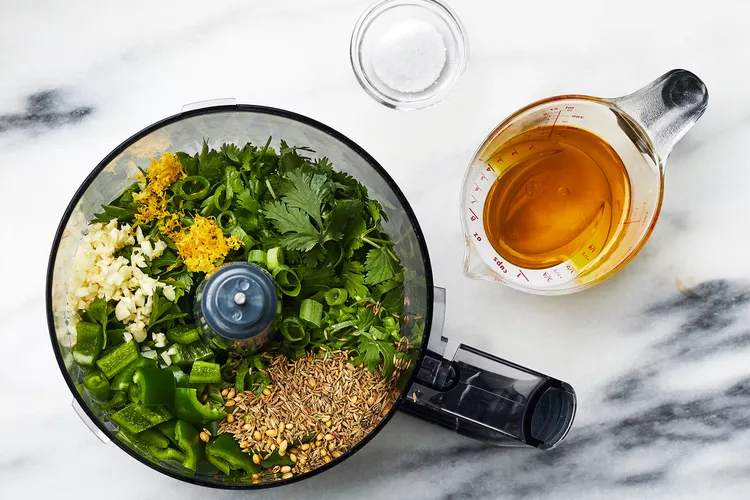
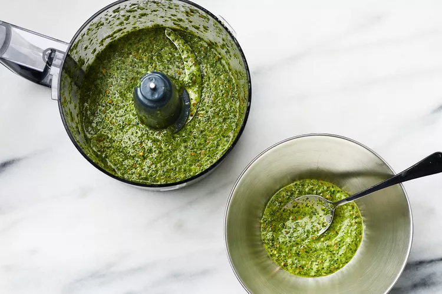

Toast cumin and coriander seeds in a small skillet over medium, stirring often, until fragrant, 2 to 3 minutes. Transfer to a food processor. Add parsley, cilantro, jalapeños, scallions, garlic, lemon zest and juice, and salt to food processor. Pulse until mixture is finely chopped, about 8 pulses, stopping to scrape down sides of bowl as needed. With food processor running, gradually drizzle in oil.
 Process until mixture is well combined and mostly smooth, about 15 seconds. Season to taste with additional salt. Cover and store in refrigerator until ready to use or up to 1 day.
Preheat oven to 400°F. Toss together potatoes, fennel, oil, salt, and pepper on a baking sheet. Spread in an even layer. Bake in preheated oven until tender, 20 to 25 minutes. Transfer mixture to a bowl; let cool 10 minutes. Stir in feta, parsley, and fennel fronds. Set aside.
While Filling bakes, place flour, semolina, 1 cup water, oil, and salt in a blender. Process until smooth, about 15 seconds. Set aside.
Fill a large pot with water to a depth of 2 inches; bring to a boil over medium-high. Reduce heat to medium-low to maintain a simmer; place a 12-inch nonstick skillet on top of the pot of water. Very lightly grease skillet with oil, and rub with a paper towel to distribute. Using a pastry brush with natural bristles, quickly brush about 2 tablespoons of the flour mixture in a thin layer over bottom of skillet. Cook until pastry is matte all over and edges release from skillet, 1 minute, 30 seconds to 2 minutes.
Carefully peel up pastry using the lifted edge, and place on a clean dish towel. Using a second pastry brush, lightly coat top of cooked pastry with oil; cover with a clean dish towel. Repeat process (no need to grease skillet again) with 2 tablespoons batter at a time to form 12 pastry sheets total, brushing each sheet with oil before stacking between towels to prevent from sticking and drying out. Discard any remaining batter.
Transfer 2 pastry sheets to a clean work surface, and stack on top of each other. Keep remaining sheets covered. Fold pastry sides in to form a 6-inch square. Place about 1/4 cup Filling on 1 diagonal half of the pastry, leaving a 3/4-inch border around the edge. Form a 1 1/2-inch well in the center, and crack 1 egg into the well. It's OK if some of the egg white spills out; just wipe away with a paper towel. Sprinkle egg lightly with salt and pepper to taste.
Fold empty pastry half over the egg, being careful not to break the yolk. Firmly press pastry edges together to seal and form a triangle. Repeat process with 2 pastry sheets, 1/4 cup Filling, and 1 egg to form a second triangle.
Pour oil into a large cast-iron skillet to a depth of 1/2 inch; heat over medium-high to 375°F. Fry pastries, 2 at a time, until golden and crisp, 1 minute, 30 seconds to 2 minutes per side. Using a fish spatula, transfer pastries to a paper towel-lined baking sheet to drain.
Repeat Steps 4 and 5 with remaining 8 pastry sheets, Filling, and 4 eggs, adjusting temperature under skillet as needed to maintain oil temperature of 375°F. Serve hot alongside Green Harissa.